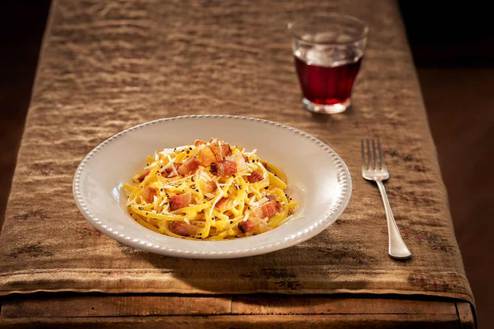

Go back
Traditional Carbonara

Description:
Carbonara is a simple and tasty recipe that anyone can make with ingredients very few ingredients.
Supposedly this dish was invented by the charcoal burners (carbonai in Roman dialect) with ingredients that were easy to store.
Ingredients
- Spaghettoni 320g
- Egg yolks 4
- Pecorino romano cheese 20g
- Guanciale
- Grana padano DOP cheese 30g
- Ground black pepper 20g
Steps
- To prepare Carbonara, start with the guanciale: from the piece of guanciale remove the pork rind and the peppery part, to prevent it from burning while cooking. Cut it into large cubes.
- Place a frying pan on a warm stove and add the guanciale, simmer until brown without adding any other fat and bring it to a pink-gold color without burning.
- Once the guanciale is ready, set it aside with its own fat.
- Boil the water for the pasta. When it boils, add a little salt, and throw in the pasta and cook until al dente. Meanwhile, grate the Pecorino and Grana Padano cheeses.
- Place the grated cheese in a steel bowl. Crack the eggs, and add only the yolks.
- Add freshly grated pepper. Start stirring with a hand whisk, then use a ladle to add a little pasta cooking water and stir some more. Now transfer the steel bowl to the pot of pasta water, placing a ladle so that a vent is left and the water does not escape.
- Continue stirring with the whisk, and add a ladleful of cooking fat from the guanciale. To see if the cream is ready, the egg yolk must reach a temperature of 150°F (65°C) – to check you can use the “bowl scraper test”: dip a rubber bowl scraper into the cream, and run your finger over it to make a line, if the egg yolk doesn’t run, it’s ready.
- When the pasta is also ready, drain it directly into the steel bowl, stir with tongs continuously, add cooking water as needed, toss and stir away from the heat. Finally add almost all the guanciale, add a little more cooking water, stir again and finish cooking on the bain-marie. Serve on a plate, finishing each portion with additional guanciale, more grated Pecorino cheese to taste, and a generous amount of ground pepper.
Go back